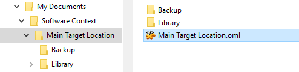
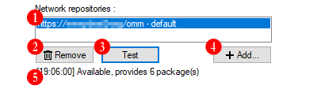

Target Location
The Target Location is the main sub-element of a
Software Context and in some
way, a key part of the
Manager. Since the
Manager is due to apply and
manage Mods (modifications) for a third-party softwares (or
games), the relation between the third-party software and Mods
(modifications) to be installed is at center of its procedures.
The Target Location is the entity that incarnate this
relation, it is the route between the
Manager and the third-party
software.
Table of content
Target Location Overview
A good way to understand Target Location is to view it as a
port of the Manager that
both serve as warehouse and make a route to the third-party
software. The Target Location not only describes a route to
the third-party software, it also hold - in tis default
configuration - in its own folder the subfolders dedicated to
store Packages (Mods)
and backup data.
The Target Location embed many parameters such as Network
repositories or how to store backup data, but the most important,
it defines three key parameters to interact wit the third-party
software:
- The Target Destination folder
This is the folder where the
Packages's (Mods) files are
copied (installed) to modify the targeted third-party software.
This is usually the third-party software root (or installation)
folder.
- The Library folder
This is the folder where the
Manager
seeks for available Packages
to be installed into the Target Destination folder.
The Packages are
(should be) created by developers in accordance to the
third-party file tree and the Target Destination folder
to be properly installed, this is why a Library folder is
usually very specific to one particular Target Location
and should never be shared between several ones.
See the Mod Package chapter
for more informations about the Target Destination folder, the
Packages's architecture
and how they are installed.
- The Backup folder
This is the folder where the
Manager will store
backup of third-party software's overwritten files and the
related restoration informations so to be able to properly
uninstall Packages and
restore the third-party software files to their original
state.
The Backup folder is a sensitive part, if this folder
is deleted, or its content alterated, the
Manager will no longer
be able to restore the original third-party software files.
The way the Manager
create and store backup data should allow this folder to be
shared between several Target Location. However because a
small risk of name collision remains, and because mixed backup
data would be harder to identify in case of manual intervention,
this is not encouraged.
Back to top
The Target Location home folder
Like its parent element (Software
Context) the Target Location takes place in its
home folder where are placed the Location definition
file (.oml) itself and, in its default configuration, one
Library subfolder to place aivailable Packages and a
Backup subfolder to store backup data.

Any Target Location must have its own home folder,
not shared with another, itself placed intot a
Software Context's
home folder.
The Target Location home folder can be renamed as
wants. The definition file can also be renamed and not
necessarily identical to its home folder.
- A Target Location home folder alone out
of a Software Context's home
folder is unusable.
- A Target Location definition file (.oml) alone,
out of its home folder (eg. directly placed into the Software
Context home folder) is unusable.
- A Target Location home folder within another
subfolder of a Software Context's home
folder will be unreachable.
The reason is that Target Locations
are discovered during Software Context
loading in a specific way:
When a Software Context loads,
the Manager seeks for
subfolders within the Software
Context's home folder, in each subfolder search for a
Target Location definition
file (.oml) and if found, loads the Target
Location like a
Software Context's module. So,
Target Locations and
Software Context are not
formally linked together, this linking is dynamic, created at
Software Context loading
depending on found Target Locations within the
Software Context's home folder.
What should be understood here is that it is actualy possible
to move or copy a Target Location
from one Software Context to
another simply by moving or copying its home folder with its
content from a Software Context
home folder to another one.
In default configuration, a Target Locations home
folder contain the two Library and Backup subfolders.
However they are not necessarly used since Target Locations
options allow to use custom external folders instead of the
default ones. This subject is more detailed in the
dedicated section bellow.
Back to top
The Target Location definition (.OML) file
The parameters related to a Target Locations is saved in
a file with the OML extension (.oml). This is the first file created
within the home folder and it is the file
Manager seeks
for to set a Software Context subfolder as a Target
Location home.
The location of the Target Locations definition file
determins the Target Locations home folder. In other
words, if you move the definition file to another Software
Context home's direct subfolder, the new subfolder where
you moved the definition file will becomes its home
folder, and this whatever its content.
The OML file is actualy a standard UTF-8 encoded XML file. It
can be viewed and edited using any text editor supporting UTF-8
encoding.
Back to top
Custom Library and Backup folders
In the default configuration, the Library and
Backup folders are direct subfolders within the Target
Location's home folder. Not only by convenience but
also because this is technically relevant:
-
First, the backup data are related to alterated files of
the Target Location's Destination folder,
it is so better to keep all backup data related to one
Target Location together and apart of others.
-
Second, Packages are created
in accordance to the third-party software's files tree and the
corresponding root Target Destination folder, so
Packages mades for one
Target Location cannot theoretically be compatible
with another one. It is so theoretically useless and
irrelevant to mix Packages
destinated to several different Target Locations.
For these reasons, it is encouraged to use the default
configuration, with Library and Backup folders as
subfolders within the Target Location's home folder.
However, because there are always particular case and
exceptions and because choice is better than no choice, it is
possible to define custom and external folders as Target
Location's Library and (or) Backup folders. These
options are perfectly valid and technically transparent. In
charge of the user to be care of what he is doing.
See the Mod Package chapter
for more informations about the Target Destination folder, the
Packages's architecture and how they are installed.
Back to top
Creating a new Target Location
A Target Location can be created only within a
Software Context, so it is
required to first open or select the
Software Context where the
Target Location are to be created, then creating
a new Target Location can be done using the Target
Location Creation dialog.
Back to top
Launching Target Location Creation dialog
The same Target Location Creation dialog can be accessed through
two several ways:
Via the Edit menu
Click on the Edit menu, then select Add Target Location...
Via the Software Context properties dialog
Open the Software Context properties
dialog as described in the Software
Context chapter, then select the Target Location tab and click
to the  button.
button.
Back to top
Target Location Creation parameters
Target Location Name
This is the indicative name used to identify the
Target Location
among the others. By convention its home subfolder
and definition file will be named according this value,
however, it is a Target Location own value which is displayed
as this name whathever how its home subfolder or
definition file are named.
Target Destination folder
This is the third-party software reference target folder,
where Packages are to be installed. This is the root of the the
third-party software's file tree, and where the
Packages's files will be copied to complete or overwrite
third-party software's files. This is usually the targeted
third-party software root (or installation) folder.
See the Mod Package chapter
for more informations about the Target Destination folder, the
Packages's architecture and how
they are installed.
Use custom Library folder
This parameter allow you to specify a custom folder as Packages
Library. The Package Library folder is where the Manager will look
at to find available Packages to be installed. By default, each
Target Location have its own
Library folder within its home folder, it is however possible to
specify a custom folder, extern from home folder, and shared with
others.
Use custom Backup folder
This parameter allow you to specify a custom folder as Backup
storage. The Backup folder is where the Manager will store all
backup data required to properly restore original third-party
software files. By default, each Target Location have its own
Backup folder within its home folder, it is however possible to
specify a custom folder, extern from home folder, and shared with
others.
Back to top
Target Location properties
To edit Target Location parameter, select the
Target Location you want to edit parameters and click on
the Edit menu then select Target Location
properties...
Back to top
Properties dialog Settings tab
This properties tab gather the Target Location's key
parameters.
Indicative name
This is the indicative name or title, used to identify the
Target Location among the others.
Changing this value will also rename the Target
Location's home folder and definition file.
However this is done for consistency purposes only. Target
Location's indicative name, definition files and home
folder can each be named diferently, it still technically valid.
Target Destination folder
This is the folder where the
Packages's (Mods) files are
copied (installed) to modify the targeted third-party software.
This is usually the third-party software root (or installation)
folder.
See the Mod Package chapter
for more informations about the Target Destination folder, the
Packages's architecture and
how they are installed.
Use custom Library folder
This parameter allow to use a custom external folder as
Library folder. This is the folder where the
Manager
seeks for available Packages
to be installed into the Target Destination folder.
Use custom Backup folder
This parameter allow to use a custom external folder as
Backup folder. This is the folder where
Manager will store
backup of third-party software's overwritten files and the
related restoration informations so to be able to properly
uninstall Packages and
restore the third-party software files to their original
state.
Back to top
Properties dialog Library options tab
This properties tab gather parameters related to
Packages installation and
Library options.
Developer mode
The developer mode enable the detection and parse of
folders as Packages's source.
This mode has two purposes, the first one is to allow Mods
developpers to easily test and modify their mods before turning
them into packages. The second is to offer a "legacy" Mods
installation process, such as JSGME does.
Enable warning messages for
Theses parameter allow to enable or disable warning messages
related to Packages
installation and uninstallation.
- Package installation overlapping
Before Packages
installation,
the Manager
verify whether Packages to be
installed may overwrite some files that was already modified by
previously installed Packages,
which is called an overlapping. If this option is enabled,
the Manager will so show a
warning message each time it detect overlapping.
- Additional installations of package dependencies
Before Packages
installation, the Manager check
all dependencies and may have find some required
Packages to be installed.
If this option is enabled,
the Manager will so show a
warning message each time dependencies
Packages will be installed
in addition to the initial selection.
- Package installation dependencies missing
Before Packages
installation, the Manager check
all dependencies and verify their availability.
If this option is enabled,
the Manager will so show a
warning message each time dependencies
Packages are missing and
wont be able to be installed as required.
- Additional uninstallations of overlapping or dependents
Before Packages
uninstallation, the Manager
check for both all dependents and overlapping
Packages installed after or
over the selection. This may require to add some
Packages to be uninstalled
before and in addition to the initial selection.
If this option is enabled,
the Manager will so show a
warning message each time dependents or overlapping
Packages will be uninstalled
in addition to the initial selection.
Back to top
Properties dialog Backup options tab
This properties tab gather parameters related to
backup data storage options.
Store backup data as archive files
If this option is enabled, the generated backup data are stored
as archive files (with the OZB extension (.ozb)) instead
of regular subfolders within the Backup folder. It is
encouraged to enable this option to avoid repetitive creation and
deletion of entires trees of files and subfolders within the Backup
folder. Using archive files, there is only one file created per
Package installation.
The OZB format is actually a standard ZIP file with specific
extension and can be opened either using a specific application or
via Windows Explorer after having renamed it with .zip extension.
Backup archive files compression
If store backup as archive files option is enabled, this
parameter allow to disable or choose the archive compression level.
Notice that the more the compression level is high, the more it
require computational ressources and time.
Unless you really need to save disk space, it is encouraged to leave
the compression disabled to keep good performances and take
advantage of using archive files.
Discard backup data
This is a kind of emergency process to delete
(move to recycle bin) all existing backup data of the current
Target Location without restoring them. In other words
the backed original files of the third-party software will be
deleted (move to recycle bin) without being restored into the
third-party software file tree.
This action should never be done unless very specific cases. For
instance, when the third-party software updated itself while
some Packages still stood
installed, turning backup data as outdated by the fact, and so
not to be restored.
Back to top
Properties dialog Network Repositories tab
This properties tab gather parameters related to
Network Repositories and download options.
The Network Repositories is
not the purpose of this chapter, it has
its own chapter which explain its principle, review its
components and related parameters.

-
Network Repositories list
The list of the current
Network Repositories
linked to the Target Location.
-
Delete Network Repository button
Deletes (permanently) the selected
Network Repository in list.
-
Test Network Repository button
Try to connect to the selected
Network Repository in list
and get repository data to check whether server is available and
provide a valid repository definition.
-
Add Network Repository button
Opens the Network Repository
Configuration dialog to add a new
Network Repository for
this Target Location.
-
Repository Test result
Show the last test result of the selected
Network Repository
Enable warning messages for
Theses parameter allow to enable or disable warning messages
related to Packages
installation and uninstallation.
- Additional download of package dependencies
Before Packages
download, the Manager check
all dependencies and may have find some required
Packages to be downloaded.
If this option is enabled,
the Manager will so show a
warning message each time dependencies
Packages will be downloaded
in addition to the initial selection.
- Package download dependencies missing
Before Packages
download, the Manager check
all dependencies and verify their availability.
If this option is enabled,
the Manager will so show a
warning message each time dependencies
Packages are missing and
wont be able to be downloaded as required.
- Package upgrade breaks dependencies
Before Package
upgrade to a newer version, the
Manager
check for Packages that
depend on the older version to be superseded.
If this option is enabled, the
Manager will so show a warning
message each time an old version of a package that others depend
on is about to be superseded, resulting in dependencies breaks.
On package upgrade
This parameter allow to choose how to deal with the older version
of Packages when upgraded.
- Move older version to recycle bin
When the newer version of the
Packages successfully
downloaded, the older one is moved to the recycle bin.
- Renaùe older version with .old extension
When the newer version of the
Packages successfully
downloaded, the older one is left in the Library folder
and is renamed with an extra .old extension.
Back to top